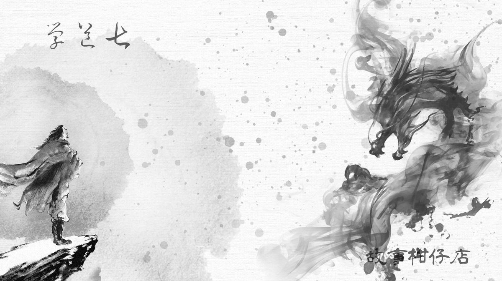

玄墨行者．學道（七）

「好端端的，問這陳年往事做什麼？」玉衡的臉僵住了，「時候不早，去睡吧。明兒還得教孩子武術。」
「我理當知道。」天璣握著釣竿的手一動不動。玉衡最怕他這樣，整個人像凝滯的風。從小她就不是他的對手，沒想到，老了，也一樣。
那段記憶，玉衡也鮮少想起，可能是不願想，可能是遺忘了比較好過。然而當她抬頭望見那輪明月，十七年前的畫面一瞬間躍然眼前。
原來玄墨一門使命收妖，卻不是見妖收妖，逢怪打怪，全得遵從蒙叟指示。
蒙叟房中幾乎半個人高的青銅簍雕銅球，名作「預天儀」，可率先預知災禍。預天儀靈象，唯蒙叟可解，再由他指派適當人選至何處收何妖。
蒙叟何許人，無人知曉，只知他是總會派來的。每一屆蒙叟沒有姓名，皆是瞎眼老人，死了一個，便再派來一個新的。蒙叟是總會與玄墨七者間唯一的橋樑，包括掌門人玄天樞，也沒有主動聯繫總會的資格。
生死有命，時辰在天。壞就壞在這。十七年前，天璣收到指示下山收妖的隔一天，蒙叟便死在預天儀旁。
這並不意外，但令玄墨行者憂心的是，預天儀不斷震動搖晃，肯定將有災禍降臨。
預天儀震了一天一夜，震幅愈來愈大，整座廂房都隨著搖晃。天樞徹夜未眠，忍至雞啼，卻未見總會派來新任蒙叟。憂心災禍擴大的他，只得按靈象推估可能方位。
當時，天璣早下山收妖了，開陽及瑤光也還沒回來，天樞便率著天璇、天權、玉衡緊急下山，只有不到三歲的大曲留守孤峰。
為時已晚。
這是玉衡隨著師兄穿越樹林，踏過山稜來到平地的第一個想法。
入玄墨一門近三十年，她未曾見過這般人間。
地面龜裂，樓房如曬乾脆化的海綿般頹頃崩塌；遠山位移，土石滾滾崩落，老樹拔根翻起不支倒地；沿海倒灌，捲沒農舍田地，溪河暴漲，沖垮屋房地基。
土礫堆埋著無數死傷，風聲聽起來都像悲鳴，而人們的嚎泣又奏成了風聲。
這不是一般天災人禍。玄墨行者的眼中，看見截然不同的人間。
地面裂隙冒出汩汩濁黑妖氣直衝天際，海中精怪翻騰捲湧大浪；猿妖掛著樹枝擺盪，一甩就折斷一株百年老樹；貓鬼及狗妖扭打成團，所經之處皆成焦土；耳朵長出翅膀的首級盤旋空中，發出尖聲獰笑。
為時已晚，但仍須亡羊補牢。
玄墨四人在山坡林間目睹此幕，大感驚駭，實在是未曾見過這等百妖橫行，群魔亂舞，就連天樞也啞口無言。
「師兄，這怎麼辦才好？」天璇問道。
「禍根難尋。妖物全滅，才能止血。」天樞怔怔望著前方答道。
「全滅？這豈不有違人妖界和平協議嗎？況且，破壞了天地平衡，有可能引來更大禍害！」玉衡急急說。
「今日妖物先將人間搞得寸草不生，我們還跟他們講和平？」天樞從懷中掏出兩個蝴蝶造型的薄木片，吹了口氣後灑向空中，木片竟就這麼分頭翩翩飛走，「在老六、老七收到木鳶來會合之前，我們必須先行動。」
「大師兄，我認為這樣不妥……」玉衡話還沒講完，便被天權扯住袖子，暗示她別做困獸之鬥。
「除了全滅妖物，還有其他方法可以阻止這場百年災禍？！」最挺天樞的天璇破口大罵，「玄墨一門保的是人，不是妖！」
爭吵不休之中，天樞默默舉起黑色令旗朝山下走去，「是我玄墨一門，就跟上。」
天璇當然是亦步亦趨跟上了，天權則拽著玉衡落在後頭。
「跟大師兄對著幹，妳是何苦？」眉間有顆大痣的天權悄聲碎念，但玉衡並不理他，哼了一聲，不情不願拖著步子。
只見天樞將令旗插在背上，與天璇二人率先騰空一躍進混亂之中。天樞抽出銅錢七星劍，橫向一揮，同時斬掉貓首狗頭，被斬牲畜瞬間化為一道輕煙鑽入七星劍的銅錢孔。
天璇口中唸道：「入冥冥，氣佈道，氣通神，奸邪賊鬼皆消亡，視我者盲，聽我者聾！」語畢，搖起三清鈴，響天徹地震邪祟。
鈴聲滴溜傳進滿天亂舞的飛顱妖耳中，他們止住獰笑，痛苦哀嚎直至潰散成霧，被收進三清鈴內，遠處林間逃竄的猿妖一被鈴聲干擾，不由得手鬆腳滑，紛紛摔在岩石上。
天權見狀，隨即敲起腰間的喚雷鼓，一聲、兩聲、三聲，宛如雷電降世，山林晃悠。明明天地乾燥，但眾妖卻紛紛抱頭亂竄，宛如被暴風雨狠狠擊打。
趁著眾妖失去防備，玉衡抽出髮間步搖射向空中，散成滿天針雨，正準備朝眾妖扎去。忽然一陣無形之力將針雨彈了回來，玉衡趕緊全數收回步搖，避免被傷。
停下動作的玄墨行者望向遙遠遙遠的彼方，海岸掀起滔天巨浪，浪叢聚為一道海藍妖氣，蜿蜒直衝而來。一陣天搖地動，水霧散去，驚見一名矮小男人擋在眼前。
矮小男人下巴生出許多條觸鬚，兩邊耳朵呈大片鋸齒扇形，遠看像極了翅膀，細小眼睛長在太陽穴邊，鼻梁扁平，長相十分怪異。
「來者何人？」天樞舉起令旗指著對方。
「在下鯤翁，有一事參詳。」他眨眨太陽穴邊的眼睛，而他身後的盆地依舊烽火連天。
－－－－－
#新連載依舊兩天一篇每晚準時六點半喔
#請人客多多指教
#記得去各大書店買我們的書故事柑仔店哩
